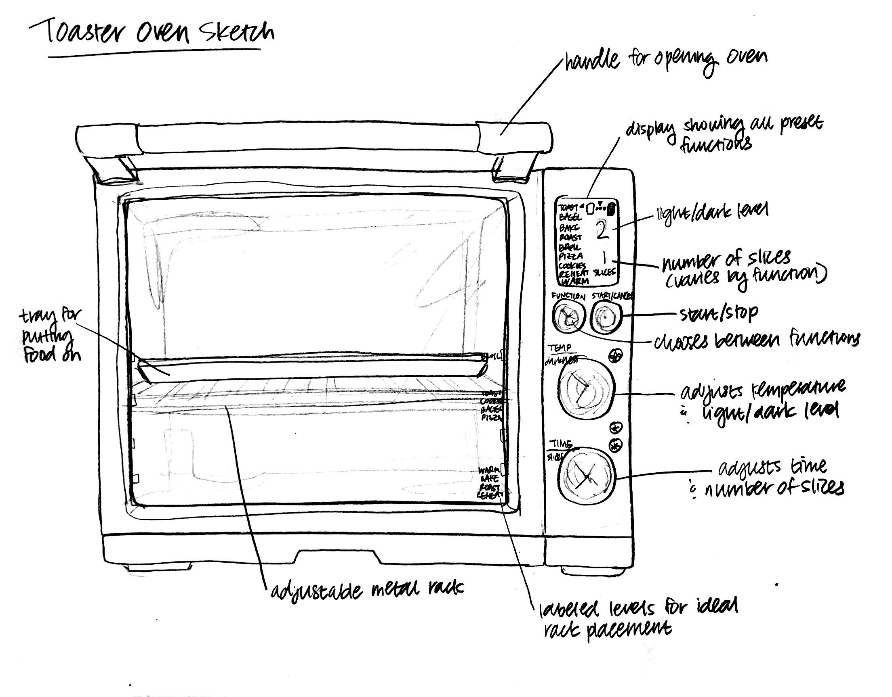

For this project, I redesigned the web interface for Edgar's Bakery: a pastry shop in my hometown (and my personal favorite). I created lo-fi wireframes in Balsamiq, hi-fi prototypes in Adobe XD, and a responsive site implementation in HTML/CSS/JavaScript.
Here's the interactive website.
For my interface, I chose my family's toaster oven. The toaster oven was designed to toast food that's too big for a regular vertical toaster. It provides the same functionality as an oven, but for smaller amounts of food. The key components include a display with preset functions (eg. bake, broil, toast), temperature/time adjusters, a start/stop button, an adjustable metal rack, and a metal tray.
To get a better idea of how people interact with the toaster oven, I decided to observe four users: my mom, my dad, and two of my closest friends from high school. After watching them cook a variety of foods -- including bread slices, brownies, and baked salmon -- I took the following notes:
All participants prepared the food they wanted to cook before interacting with the toaster oven.
The more complicated the dish, the longer users stared at the oven while it cooked.
Most users didn't wait for the food to cool down after it was finished cooking.
After getting an idea of how people interacted with the interface, I wanted to hear people's thoughts to see if how they acted aligned with what they thought. I asked each user ten questions about the toaster oven, then summarized my findings below:
What's the first thing that comes to mind when you think of a toaster oven?
Most users mentioned bread. Some mentioned specific foods, such as breakfast sandwiches and brownies; others mentioned thinking of toaster oven-specific foods (aka foods that wouldn't fit in a regular toaster).What were your first impressions of this specific toaster oven?
The majority of interviewees emphasized the toaster oven's small size. Many also mentioned ease of use, with one person commenting on the aesthetics (specifically its stainless steel exterior).What do you typically use a toaster oven for, if at all?
All of the interviewees mentioned using a toaster oven for toasting bread or baking desserts. Some used the preset functions (eg. the "bagel" setting), while others preferred setting their own time and temperature.How often do you use a toaster oven?
75% of the interviewees used a toaster oven 1-2 times a month, typically for making breakfast. One person used a toaster oven every day for breakfast sandwiches, toast, and/or reheating biscuits.When you use a toaster oven, how long do you typically spend using it?
The answers to this question ranged from 1 minute to a few hours. All interviewees reported doing other things while waiting, especially for items that took longer to cook. The actual time spent interacting with the oven (eg. pushing buttons, turning dials) was minimal regardless of cooking time.Which interaction with the toaster oven feels the most intuitive?
The majority of interviewees expressed enthusiasm for the preset functions (eg. bake, toast, broil) despite possessing different comfort levels with toaster ovens. They mentioned that despite the range of functions, they felt it was fairly easy to configure their preferred settings.Which interaction with the toaster oven feels the least intuitive?
The answers for this question were varied. Some mentioned adjusting the time and temperature felt a little awkward, since there were no labels to indicate increasing/decreasing times/temperatures. Overall, the least intuitive function seemed to depend on the user's familiarity with toaster ovens.What do you like about this specific toaster oven?
The answers to this question were similar to users' responses for their first impressions of the toaster oven. Most expressed enthusiasm for the oven's smaller size, since it made it easier for them to cook individual meals. All participants appreciated being able to choose from a variety of preset functions.What do you dislike about this specific toaster oven?
Most users disliked the toaster oven's size; despite it being smaller than full-sized ovens, they felt that it was still too bulky and had awkward dimensions. One user reported burning themselves due to the toaster oven's low height, while another mentioned it taking up too much countertop space when not in use.If you could change one thing about this toaster oven, what would it be?
Most users wanted to change the aesthetics of the toaster oven. One user did not like the stainless steel, another wished it was easier to disassemble for cleaning. One user mentioned that the functions -- despite offering a range of options -- could be simplified more; for example, reducing "toast" and "bagel" to a single "bread" category.After observing a few users, gathering their thoughts, and making a few observations of my own, I decided I had enough information to draw up two personas (this was the exciting part!). I tried to create personas that represented the entire user demographic, focusing specifically on modeling them after my observations.
Hurried Hannah is an impatient 20-year-old college student studying English literature. She just moved into her first apartment, and she bought a toaster oven to make quick breakfasts. As a college student, Hannah prefers cooking convenient meals with smaller portions (especially in the morning so she can rush to her 9AM seminar).
Because this is Hannah's first time using a toaster oven, she's unfamiliar with the interface. She isn't sure what the toaster oven does beyond toasting bread, and she's slightly confused by the variety of functions.
Hannah represents people who utilize toaster ovens for making breakfast foods. She's representative of users who interact with the toaster oven frequently for short periods of time (1-10 min every day), as well as younger users who are unfamiliar with the toaster oven's capabilities.
Experienced Ethan is a 50-year-old grandfather living in the suburbs of New Hampshire. He's a patient man who enjoys baking cookies when his grandchildren visit each month. Ethan is very familiar with using a toaster oven, and he likes baking with it (even if it takes a few hours).
As a frequent baker, Ethan is familiar with using a toaster oven; however, he only uses the "baking" function, so he's unfamiliar with the rest of the presets. Additionally, Ethan frequently burns himself taking out the cookies from the oven.
Sam represents people who utilize toaster ovens for making baked goods. He's representative of users who interact with the toaster infrequently for long periods of time (1-2 hours monthly), as well as older users who are familiar with how to use a toaster oven (even if they don't know what all the presets do).
After drawing up two personas, I chose one of them -- Hurried Hannah -- to create a storyboard of her interaction with the toaster oven. For this section, I found it helpful to continuously ask myself, "what would Hannah do?"
1) Hannah jolts awake to the sound of her alarm at 8:50AM.
2) She rushes through her morning routine, panicking that she'll be late for her 9AM seminar.
3) When she's done, she runs to the kitchen to prepare breakfast.
4) She grabs a slice of bread from the shelf.
5) Hannah tosses the slice into her recently-bought, brand-new toaster oven.
6) She fumbles with the functions for a second, momentarily overwhelmed by all the options.
7) Hannah finally spies the "toast" function, and she customizes the settings to 1 slice at the lowest level.
8) While the bread is toasting, she runs to her bedroom to find her keys.
9) She sprints back into the kitchen at 8:58AM, pulling out the toast although it has 2 minutes left.
10) Hannah grabs the toast and dashes out of the apartment.
11) She slides into her seat and eats her toast right as her seminar begins. Breakfast is served!
This storyboard illustrates several points about Hannah: that she's impatient (she took out the toast early), she's chronically late (she barely made it to school on time), she's a new user (she was overwhelmed by the unfamiliar options), and she multitasks (she retrieved her keys while the toast was toasting).
I think this project was a great exercise in learning what motivates people. I'd always thought of interfaces in context of websites and mobile apps; I'd never really thought of them in a physical context. This project helped me understand interfaces beyond screens and simple aesthetics, and I got hands-on experience dissecting what makes an interface an interface. I learned how to research users in context of their goals, motivations, and character, and I gained an exciting look into what makes people tick. Overall, I'm excited to apply what I've learned to future projects!